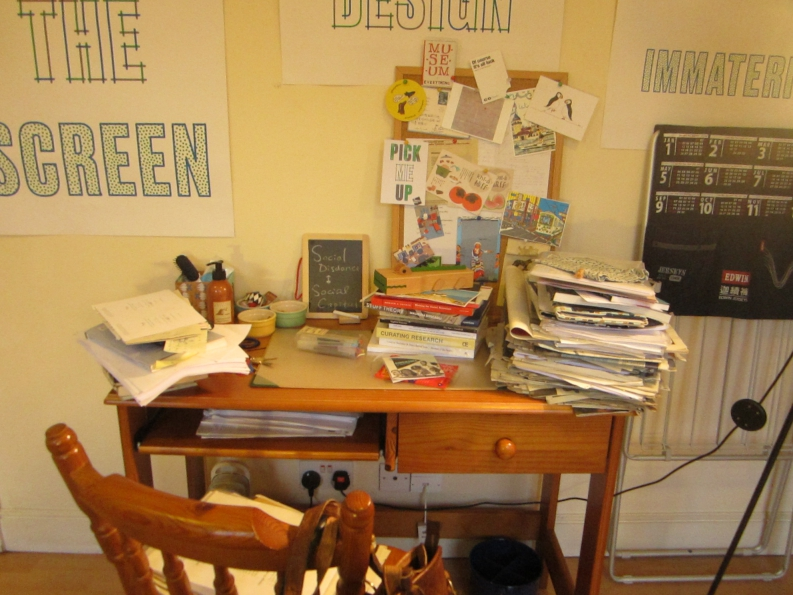

 Mediated Memories and Aspirations in the Home Objects 18 March, 2016 in #Data Analysis #Assessed Project
Devices and Affordances 15 March, 2016 in #Data Analysis #The Materiality of Reading #Assessed Project
The Materiality of Reading and Note-taking 06 March, 2016 in #The Materiality of Reading #Assessed Project